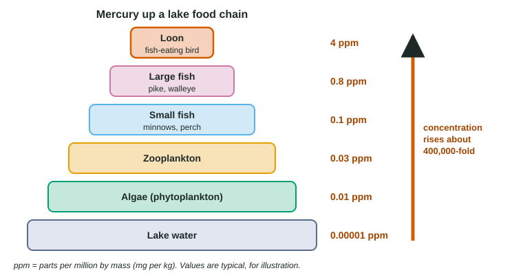

Ecosystems are always changing, but some changes are sudden or large enough to remove species, break food webs and change how energy and matter move. This page covers the disruptions the exam expects you to explain and predict: losing habitat, invasive species, overharvesting, pollution (including eutrophication and biomagnification), climate change and ocean acidification, and natural events such as eruptions and El Niño. For each one, the skill is the same: follow the chain of causes from the disruption to its effects on populations, communities and ecosystems.
People as a force of change
Human impact (also called anthropogenic change) is now the main driver of biodiversity loss. The five big causes are habitat loss, invasive species, overharvesting, pollution and climate change. They often act together: a forest cut into fragments is easier for invasive species to enter and harder for native species to move through as the climate warms.
| Disruption | What happens | Example |
|---|---|---|
| Habitat loss and fragmentation | Less living space; small, isolated patches hold small populations | Tropical forest cleared for farms |
| Invasive species | A non-native species, free of its home enemies, outcompetes or eats natives | Brown tree snakes on Guam |
| Overharvesting | Removal faster than reproduction | Atlantic cod off Newfoundland |
| Pollution | Toxins, excess nutrients, plastics or heat harm organisms | Dead zones; mercury in fish |
| Climate change | Warming shifts ranges and seasonal timing | Coral bleaching; earlier spring leaf-out |
| Natural disturbance | Sudden physical change not caused by people | Volcanic eruption; El Niño |
Habitat loss and fragmentation
Habitat loss is the destruction of the places species live: clearing forests for crops and pasture, draining wetlands, building cities and roads. It is the largest single cause of species loss. Even when some habitat remains, fragmentation breaks it into small, isolated patches. A small patch supports only a small population, which is more easily wiped out by chance events and loses genetic variation (topic 7.4). Patches also have proportionally more edge, where conditions are hotter, drier and windier, and species that need deep forest decline. Animals that need large territories, such as big cats, may disappear from a set of fragments even if the total area is large.
Invasive species
An invasive species is a non-native (introduced) species that spreads rapidly in a new place and harms the ecosystem. Most species moved by people never establish, but the ones that do often thrive because they have left behind the predators, parasites, diseases and competitors that held them in check at home. Native species may have no defenses against them.
- Brown tree snakes, carried to Guam in cargo after World War II, met birds that had never faced a tree-climbing snake. Most of the island's native forest bird species disappeared.
- Zebra mussels from Europe reached North America's Great Lakes in ship ballast water. They filter huge amounts of plankton, coat pipes and smother native mussels.
- Cane toads released in Australia to control beetles in sugar cane spread across the north; native predators that eat them die from their toxin.
Overharvesting
Overharvesting removes individuals faster than the population can replace them. Recall logistic growth (topic 8.4): a population replaces itself fastest at about half its carrying capacity, and harvest above that rate drives it down. Species that mature late, especially those with few offspring (K-selected, topic 8.3), are the most vulnerable. Atlantic cod off Newfoundland were fished down until the fishery collapsed in 1992. Fishing was stopped, but the stock stayed low for decades, because the ecosystem had changed and cod take years to mature. The passenger pigeon, once among the most abundant birds in North America, was hunted to extinction by 1914.
Pollution 1: eutrophication
![Six steps of eutrophication. 1: fertilizer, manure and sewage wash nitrate and phosphate into water. 2: algae, no longer limited by nutrients, multiply in an algal bloom. 3: crowded algae shade one another, die and sink. 4: bacteria break down the dead algae by aerobic respiration, using dissolved oxygen. 5: oxygen is used faster than it mixes down from the surface, and deep water becomes hypoxic. 6: fish leave or die, and animals that cannot move away suffocate, leaving a dead zone. In deep water most oxygen is used by decomposers; living algae add oxygen near the surface by day but use it at night.](../figures/eutrophication-chain.svg)
Nitrogen and phosphorus often limit the growth of algae (topic 8.2). Nutrient runoff from fertilized fields, animal manure and sewage removes that limit. Eutrophication follows a predictable chain (Figure 1): an algal bloom turns the water green; the algae die and sink; decomposers break them down by aerobic respiration and use up the dissolved oxygen; fish and bottom animals leave or die, creating a dead zone. The Gulf of Mexico's summer dead zone, fed by the Mississippi River, and the dead zones of the Baltic Sea are examples. Oxygen also swings daily in a eutrophic lake or stream: high in the afternoon, when algae photosynthesize, and lowest at dawn, after a night in which algae and decomposers respire with no photosynthesis. Fish kills often happen at dawn.
Eutrophication can be reversed. In the 1970s, limits on phosphate in detergents and better sewage treatment cut the phosphorus entering Lake Erie, and its algal blooms and low-oxygen zones shrank for a time.
Pollution 2: biomagnification

Some pollutants are broken down quickly or excreted in urine. Others, such as mercury, the pesticide DDT and industrial chemicals called PCBs, are persistent (not broken down) and fat-soluble, so they are stored in body fat and tissues instead of being excreted. They build up in an animal over its lifetime (bioaccumulation). Because only about 10% of the energy in food becomes new tissue (topic 8.2), each consumer eats many times its own mass of food in its life and keeps nearly all of the toxin in it. So the concentration rises at each trophic level: biomagnification (Figure 2).
Worked example: how many times higher? In a lake, mercury is 0.1 ppm in small fish and 0.8 ppm in the large fish that eat them.
Step 1. Factor for one step. 0.8 ÷ 0.1 = 8 times higher in large fish.
Step 2. Whole chain. Loons at 4 ppm, water at 0.00001 ppm: 4 ÷ 0.00001 = 400,000 times.
Step 3. Why it matters. The water looks almost clean, yet the top predator carries a dose that can harm it. In the 1950s and 1960s, DDT in fish-eating birds such as bald eagles, ospreys and pelicans made their eggshells thin enough to break during incubation, and their numbers crashed until DDT was banned in the United States in 1972.
Top predators, including people who eat a lot of large predatory fish such as swordfish and some tuna, are at the greatest risk, which is why health agencies advise limits on eating those fish, especially during pregnancy.
Climate change and ocean acidification
Burning fossil fuels and clearing forests have raised atmospheric CO₂ (topic 8.2). CO₂ is a greenhouse gas, and the extra heat it traps is driving climate change, including global warming. Effects on ecosystems include:
- Range shifts: species move toward the poles or uphill as their old ranges warm; species already at mountaintops or the poles have nowhere to go.
- Timing mismatches: many events are timed by temperature, others by day length (topic 8.1). If caterpillars hatch earlier in a warm spring but birds still lay eggs by day length, chicks hatch after the caterpillar peak and go hungry.
- Coral bleaching: unusually warm water makes corals expel the algae that live in their tissues and feed them; repeated bleaching kills reefs.
The oceans have absorbed about a quarter to a third of the CO₂ people have released. That slows warming but causes ocean acidification. CO₂ reacts with water to form carbonic acid, which releases H⁺ ions (topic 1.1). The extra H⁺ combines with carbonate ions (CO₃²⁻), leaving less carbonate for animals that build calcium carbonate shells and skeletons, such as corals, oysters, sea urchins and some plankton. Ocean surface pH has fallen by about 0.1 since the 1700s, from about 8.2 to 8.1, which is about 25-30% more H⁺, because the pH scale is logarithmic.
Natural disturbances
Not every disruption is caused by people. Natural disturbances such as volcanic eruptions, hurricanes, floods, wildfires started by lightning and droughts can change an ecosystem in hours. The 1980 eruption of Mount St. Helens flattened about 600 km² of forest; plants and animals recolonized it over the following decades, starting with survivors in sheltered spots. In an El Niño event, every few years, warm surface water spreads east across the tropical Pacific. Off Peru, it cuts off the upwelling of cold, nutrient-rich water that feeds phytoplankton, so the plankton, the anchovies that eat them and the seabirds and sea lions that eat the anchovies all decline, while rainfall patterns change on several continents. Diverse ecosystems tend to resist and recover from such shocks better (topic 8.6).
Common mistakes
- "Living algae use up the oxygen in a dead zone." Mostly decomposers do, breaking down dead algae.
- "Biomagnification means a toxin becomes more poisonous." The toxin is the same; its concentration rises at each level.
- "Any species from elsewhere is invasive." Only those that spread and cause harm are invasive.
- "Ocean acidification makes the sea acidic." Seawater stays basic (pH above 7); it is becoming less basic, and that is enough to reduce carbonate.
- "The ozone hole causes global warming." They are different problems; warming is caused by greenhouse gases trapping heat.